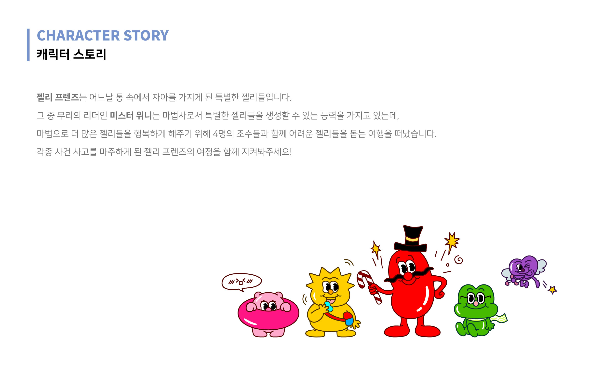

Wenny Beeny Character Branding
젤리를 주력으로 판매하는 F&B 브랜드 ’위니비니’의 캐릭터 브랜딩을 진행했습니다.
위니비니는 소비자의 다양한 기호에 따라 원하는 만큼 초콜릿, 캔디, 쿠키 등을 구매하는 형태의 국내 최초의 Pick&Mix 브랜드입니다.
이러한 Pick&Mix 매장의 특징을 반영하여 다양한 컬러와 모양을 지닌 캐릭터 6종을 제작했으며,
위니비니가 전달하고자 하는 브랜드 가치인 ‘FUN’함을 보여줄 수 있는 경쾌하고 흥미로운 캐릭터 스토리를 구상했습니다.
우연히 통 속에서 자아를 얻게 된 메인 캐릭터 마법사 위니와 그를 도와 모험을 떠나는 위니비니 친구들의 지루할 틈이 없는 FUN한 이야기를 기대해주세요!
This is character branding project for Winny Benny, an F&B brand that mainly sells jelly. Winny Benny is Korea's first Pick&Mix brand in the form of purchasing as many chocolates, candies, and cookies as you want according to various tastes of consumers. Reflecting the characteristics of the Pick&Mix store, I created six characters with various colors and shapes, and came up with a cheerful and interesting character story that can show the brand value 'FUN' that Winnie Beanie wants to convey. Please look forward to the FUN story of Winnie, the main character wizard who accidentally gained an ego in the barrel, and Winnie Beanie friends who help him on an adventure!
This is character branding project for Winny Benny, an F&B brand that mainly sells jelly. Winny Benny is Korea's first Pick&Mix brand in the form of purchasing as many chocolates, candies, and cookies as you want according to various tastes of consumers. Reflecting the characteristics of the Pick&Mix store, I created six characters with various colors and shapes, and came up with a cheerful and interesting character story that can show the brand value 'FUN' that Winnie Beanie wants to convey. Please look forward to the FUN story of Winnie, the main character wizard who accidentally gained an ego in the barrel, and Winnie Beanie friends who help him on an adventure!
